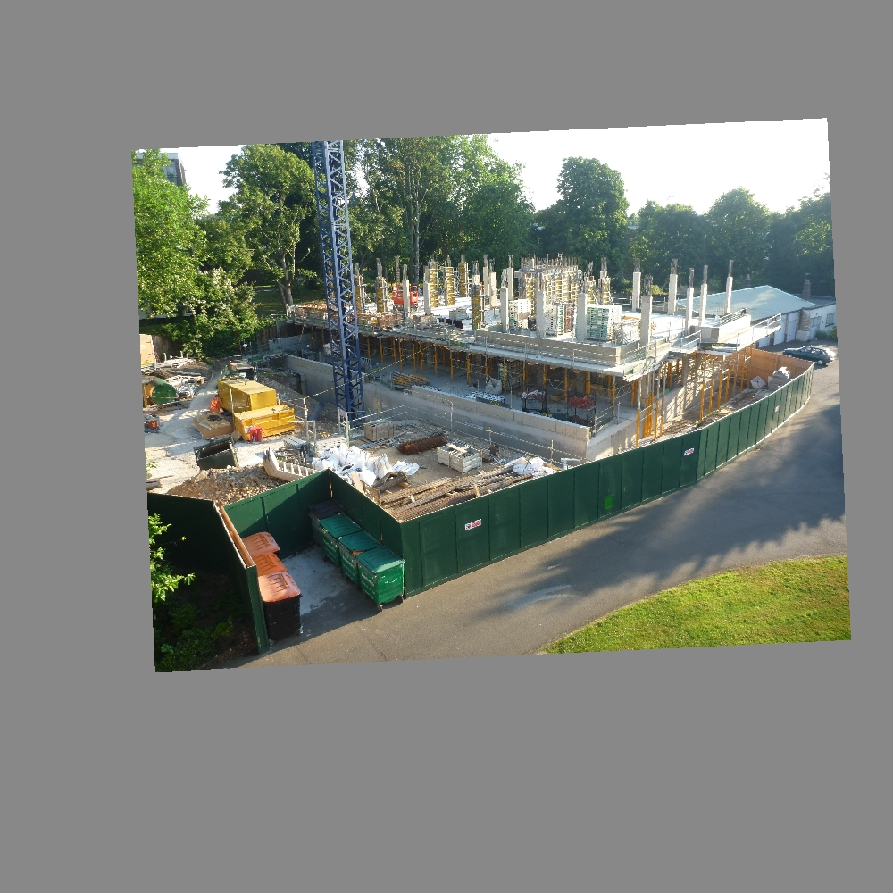
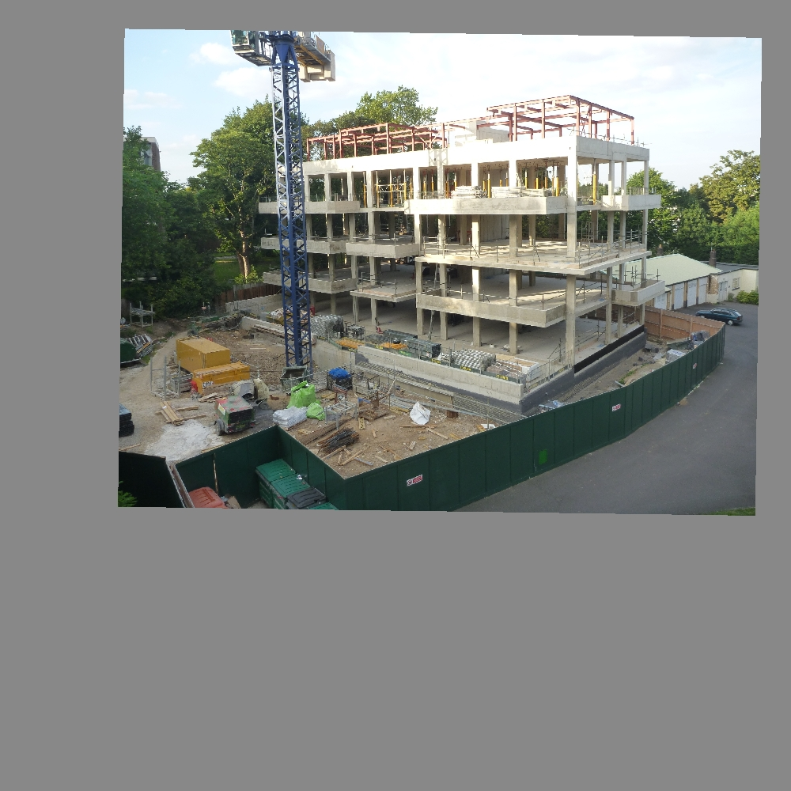
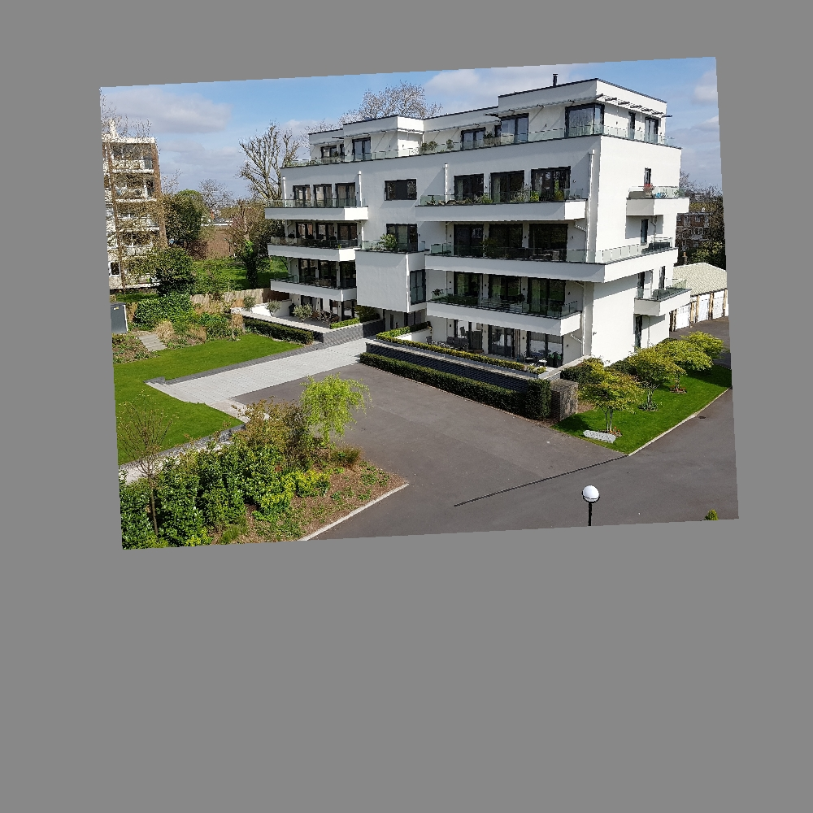
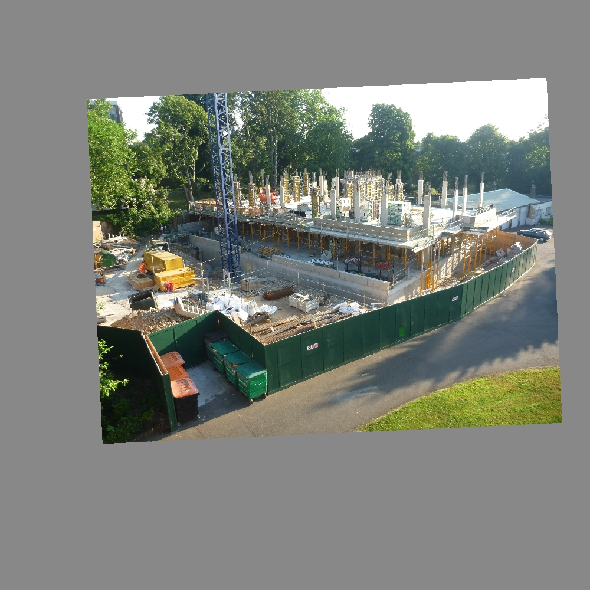
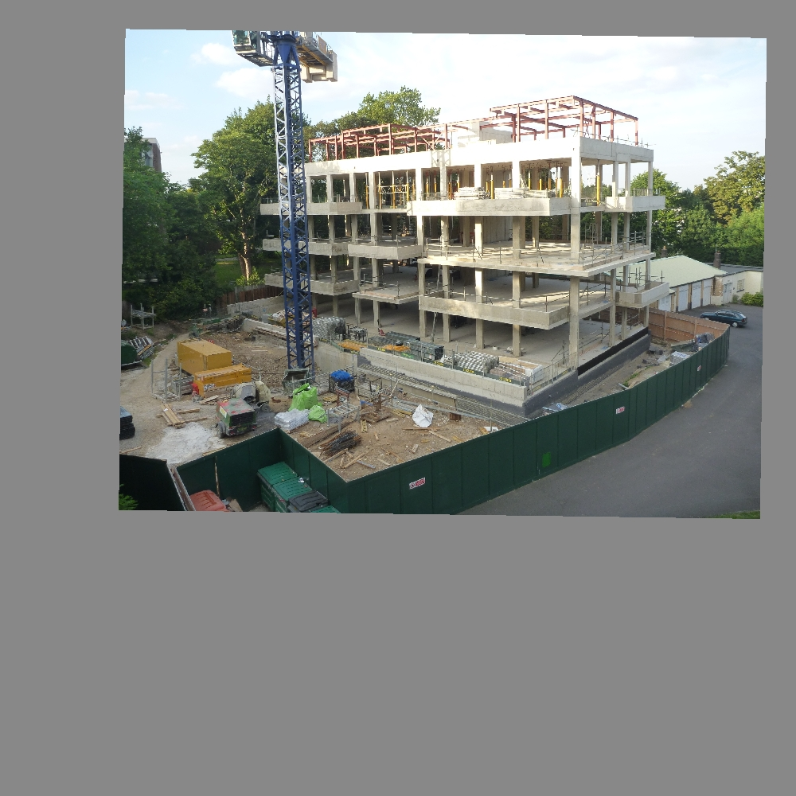
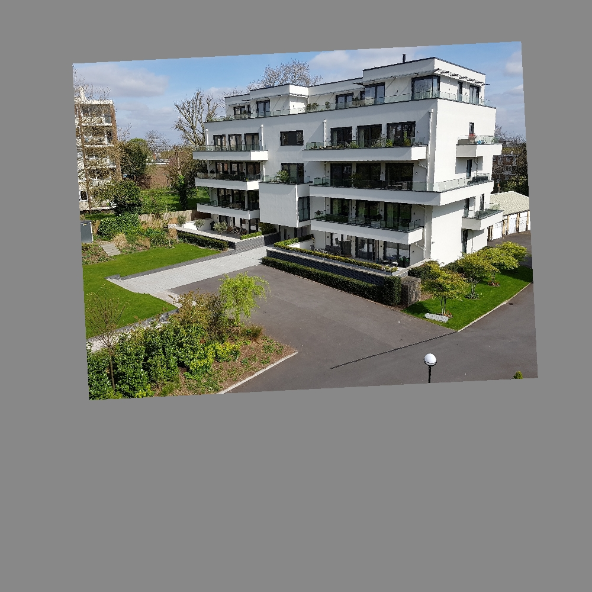
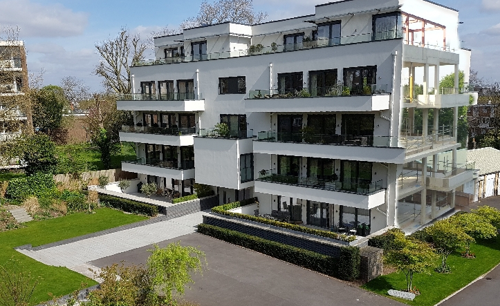

이 페이지는 아직 번역되지 않았습니다. 이 페이지의 Google 번역을 사용해보십시오.
Fun with Layers
Interesting effects can be produced from a set of Zoetic aligned images by exposing different sections of different images and then combining them into a single image. In this way, an image can be produced with juxtaposed views from different dates. For example, the following aligned images from the Flats project:

 





can produce the image where the right wall of the flat shows an earlier stage of construction:
and a less subtle example, where there are time shifts (fairly randomly) throughout the scene:

An easy way of achieving this effect is by exporting the aligned images from Zoetic and loading each of the aligned images, as a separate layer, into an image editor such as GIMP or Photoshop. Each layer can then be partially exposed using the image editor's tools to create 'time holes' to the past and the future.
Loading the images into the image editor can be done either by (1) converting the aligned images to a file format that supports multiple layers or (2) loading the individual images directly into the image editor.
As follows:
- Export the images using Zoetic's Export aligned images function (within Zoetic's menu). Then, on the platform (Windows, Linux, Mac) you will be using, unzip the Zoetic exported file to produce the files: composite.jpg, image1.jpg, image2.jpg...
- Follow either Approach 1 or Approach 2:
Approach 1: With software such as ImageMagick (available for free) convert the images into a mult-layer file format, for example .PSD. Assuming ImageMagick has been properly installed, enter at a command line:
convert composite.jpg image0.jpg image1.jpg image2.jpg image.psdAdd as many Zoetic exported JPGs to the command as required. The resulting image.psd can be opened in GIMP or Photoshop or any other application that supports PSD files.
Note that the first file following "convert", composite.jpg, is not added to a layer but is only used to provide a preview of the PSD file.
Approach 2: Drag and drop image1.jpg, image2.jpg... on to GIMP (or whichever application you are using) ensuring that the application loads each image as a separate layer. It is up to the reader to know how to use their image editor but they may need to add an alpha channel to each of the layers.
- Within your image editor of choice, play around with the layers...
A video of GIMP in action can be found here.
References
| Back | Contents | Feedback |
|---|